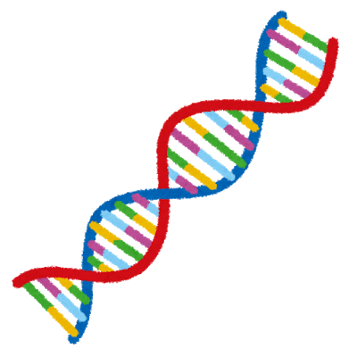

塩基配列解析ツール

塩基配列を入力してください。大文字・小文字は区別されません。
配列が複数ある場合は必ずFASTA形式で入力してください。
解析の種類を選んでください。
配列の整形
塩基以外の文字と改行を除去する
塩基以外の文字を除去し、
10
20
30
40
50
60
70
80
90
100
文字ごとに改行する
相補鎖に変換
RNA配列を取得
反転 (3'-->5')
アミノ酸配列に翻訳
読み枠を選択
すべて選択
(+)鎖フレーム1
(+)鎖フレーム2
(+)鎖フレーム3
(−)鎖フレーム1
(−)鎖フレーム2
(−)鎖フレーム3
Tm値を計算
オリゴマー濃度:
μM
Na
+
濃度:
mM
結果